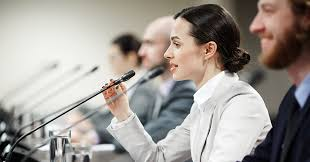

The effects of this illusion are very prominent and character-defining for many students. The biggest effect of a lack of college readiness is that education becomes a deterrent for students and causes them to grow resentful and cynical of it. Moreover, there are also less extreme effects that accompany this lack of college preparedness, those being stress and strain due to the more rigorous coursework, having no social support system to lean on, and the lack of motivation to continue because of the overwhelming amount of freedom compared to high school. We see these effects when Florence states,
“Mary’s lack of family involvement left her feeling self-dependent when dealing with her academic struggles. Her experience transitioning to college was stated to be without the help from others. In fact, she described her preparation for college in high school as minimal. She said that the school was “not there for students…I would find out about Senior events two weeks after it happened. I had to be organized for them [the school] because they weren’t organized.”(Florence). ”
Mary’s experience during her transition to college makes it apparent how her high school wasn’t helpful in facilitating her transition, as well as how much these effects have impacted her college experience. Furthermore, the lack of support she received from her family made her feel less able to open up to them about her academic struggles. This feeling of self-dependence, enabled by both her parents and her school, caused her to just bottle up her emotions, which in turn caused her to be less college-ready emotionally and socially.
While viewing her experiences, it may seem that Mary is at fault for her own unpreparedness. However, the blame would actually fall upon high school and policy makers. I say this because their positions enable them to create a more equitable and helpful environment for students, yet they fail to do so. Policies that I propose to help end this illusion of college readiness is, firstly, creating a social support system in schools for students, as this feature would help to make them to become more mentally and emotionally in tune with their emotions so as to not suffer from burnout or fatigue. Furthermore, they could also introduce students to the benefits of dual enrollment classes as a way to experience the amount of coursework and academic rigor expected of college students. However, I’m aware that some students only attend college because they’re unaware of any other opportunities and believe this to be the only way for them to succeed after high school. For this, I suggest showing students other career paths that are not necessarily tied to a college education and dismantling the notion that going to college is a definite factor in determining a person’s success.
Target audience:
My target audience for this paper is policymakers, high schools, and education boards. I chose these groups specially because of their connection to education and the power they have to enable change in secondary education. When it comes to the policy makers are able to make many policies that would benefit students and allow them to have the resources that would cause them to be prepared for higher education. While high schools could instill curriculums and provide any opportunity that would help students getting a footing into college before they even began it. An example of an opportunity such as this would have to be CCP or College Credit Plus. By implementing College Credit Plus, students would be able to take college courses while they are in high school, which would help them to see how college professors handle assignments and projects.
